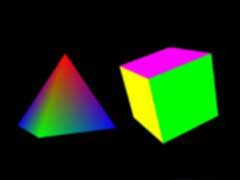

|
第05課 |
 |
|  |
3D空間:
我們使用多邊形和四邊形創建3D物體，在這一課裡，我們把三角形變為立體的金子塔形狀，把四邊形變為立方體。 |
|
 |
|
在上節課的內容上作些擴展，我們現在開始生成真正的3D對象，而不是象前兩節課中那樣3D世界中的2D對象。我們給三角形增加一個左側面，一個右側面，一個後側面來生成一個金字塔(四稜錐)。給正方形增加左、右、上、下及背面生成一個立方體。
我們混合金字塔上的顏色，創建一個平滑著色的對象。給立方體的每一面則來個不同的顏色。 |
|
int DrawGLScene(GLvoid) // 此過程中包括所有的繪製代碼
{
glClear(GL_COLOR_BUFFER_BIT | GL_DEPTH_BUFFER_BIT); // 清除屏幕及深度緩存
glLoadIdentity(); // 重置模型觀察矩陣
glTranslatef(-1.5f,0.0f,-6.0f); // 左移 1.5 單位，並移入屏幕 6.0
glRotatef(rtri,0.0f,1.0f,0.0f); // 繞Y軸旋轉金字塔
glBegin(GL_TRIANGLES); // 開始繪製金字塔的各個面
|
有些人可能早已在上節課中的代碼上嘗試自行創建3D對象了。但經常有人來信問我:"我的對象怎麼不會繞著其自身的軸旋轉？看起來總是在滿屏亂轉。"要讓您的對象繞自身的軸旋轉，您必須讓對象的中心坐標總是(0.0f,0,0f,0,0f)。
下面的代碼創建一個繞者其中心軸旋轉的金字塔。金字塔的上頂點高出原點一個單位，底面中心低於原點一個單位。上頂點在底面的投影位於底面的中心。
注意所有的面－三角形都是逆時針次序繪製的。這點十分重要，在以後的課程中我會作出解釋。現在，您只需明白要麼都逆時針，要麼都順時針，但永遠不要將兩種次序混在一起，除非您有足夠的理由必須這麼做。
我們開始畫金字塔的前側面。因為所有的面都共享上頂點，我們將這點在所有的三角形中都設置為紅色。底邊上的兩個頂點的顏色則是互斥的。前側面的左下頂點是綠色的，右下頂點是藍色的。這樣相鄰右側面的左下頂點是藍色的，右下頂點是綠色的。這樣四邊形的底面上的點的顏色都是間隔排列的。 |
|
glColor3f(1.0f,0.0f,0.0f); // 紅色
glVertex3f( 0.0f, 1.0f, 0.0f); // 三角形的上頂點 (前側面)
glColor3f(0.0f,1.0f,0.0f); // 綠色
glVertex3f(-1.0f,-1.0f, 1.0f); // 三角形的左下頂點 (前側面)
glColor3f(0.0f,0.0f,1.0f); // 藍色
glVertex3f( 1.0f,-1.0f, 1.0f); // 三角形的右下頂點 (前側面)
|
現在繪製右側面。注意其底邊上的兩個頂點的X坐標位於中心右側的一個單位處。頂點則位於Y軸上的一單位處，且Z坐標正好處於底邊的兩頂點的Z坐標中心。右側面從上頂點開始向外側傾斜至底邊上。
這次的左下頂點用藍色繪製，以保持與前側面的右下頂點的一致。藍色將從這個角向金字塔的前側面和右側面擴展並與其他顏色混合。
還應注意到後面的三個側面和前側面處於同一個glBegin(GL_TRIANGLES) 和 glEnd()語句中間。因為我們是通過三角形來構造這個金字塔的。OpenGL知道每三個點構成一個三角形。當它畫完一個三角形之後，如果還有餘下的點出現，它就以為新的三角形要開始繪製了。OpenGL在這裡並不會將四點畫成一個四邊形，而是假定新的三角形開始了。所以千萬不要無意中增加任何多餘的點。 |
|
glColor3f(1.0f,0.0f,0.0f); // 紅色
glVertex3f( 0.0f, 1.0f, 0.0f); // 三角形的上頂點 (右側面)
glColor3f(0.0f,0.0f,1.0f); // 藍色
glVertex3f( 1.0f,-1.0f, 1.0f); // 三角形的左下頂點 (右側面)
glColor3f(0.0f,1.0f,0.0f); // 綠色
glVertex3f( 1.0f,-1.0f, -1.0f); // 三角形的右下頂點 (右側面)
|
現在是後側面。再次切換顏色。左下頂點又回到綠色，因為後側面與右側面共享這個角。 |
|
glColor3f(1.0f,0.0f,0.0f); // 紅色
glVertex3f( 0.0f, 1.0f, 0.0f); // 三角形的上頂點 (後側面)
glColor3f(0.0f,1.0f,0.0f); // 綠色
glVertex3f( 1.0f,-1.0f, -1.0f); // 三角形的左下頂點 (後側面)
glColor3f(0.0f,0.0f,1.0f); // 藍色
glVertex3f(-1.0f,-1.0f, -1.0f); // 三角形的右下頂點 (後側面)
|
最後畫左側面。又要切換顏色。左下頂點是藍色，與後側面的右下頂點相同。右下頂點是藍色，與前側面的左下頂點相同。
到這裡金字塔就畫完了。因為金字塔只繞著Y軸旋轉，我們永遠都看不見底面，因而沒有必要添加底面。如果您覺得有經驗了，嘗試增加底面(正方形)，並將金字塔繞X軸旋轉來看看您是否作對了。確保底面四個頂點的顏色與側面的顏色相匹配。 |
|
glColor3f(1.0f,0.0f,0.0f); // 紅色
glVertex3f( 0.0f, 1.0f, 0.0f); // 三角形的上頂點 (左側面)
glColor3f(0.0f,0.0f,1.0f); // 藍色
glVertex3f(-1.0f,-1.0f,-1.0f); // 三角形的左下頂點 (左側面)
glColor3f(0.0f,1.0f,0.0f); // 綠色
glVertex3f(-1.0f,-1.0f, 1.0f); // 三角形的右下頂點 (左側面)
glEnd(); // 金字塔繪製結束
|
接下來開始畫立方體。他由六個四邊形組成。所有的四邊形都以逆時針次序繪製。就是說先畫右上角，然後左上角、左下角、最後右下角。您也許認為畫立方體的背面的時候這個次序看起來好像順時針，但別忘了我們從立方體的背後看背面的時候，與您現在所想的正好相反。(譯者註：您是從立方體的外面來觀察立方體的)。
注意到這次我們將立方體移地更遠離屏幕了。因為立方體的大小要比金字塔大，同樣移入6個單位時，立方體看起來要大的多。這是透視的緣故。越遠的對象看起來越小
:) 。 |
|
glLoadIdentity();
glTranslatef(1.5f,0.0f,-7.0f); // 先右移再移入屏幕
glRotatef(rquad,1.0f,1.0f,1.0f); // 在XYZ軸上旋轉立方體
glBegin(GL_QUADS); // 開始繪製立方體
|
先畫立方體的頂面。從中心上移一單位，注意Y坐標始終為一單位，表示這個四邊形與Z軸平行。先畫右上頂點，向右一單位，再屏幕向裡一單位。然後左上頂點，向左一單位，再屏幕向裡一單位。然後是靠近觀察者的左下和右下頂點。就是屏幕往外一單位。 |
|
glColor3f(0.0f,1.0f,0.0f); // 顏色改為藍色
glVertex3f( 1.0f, 1.0f,-1.0f); // 四邊形的右上頂點 (頂面)
glVertex3f(-1.0f, 1.0f,-1.0f); // 四邊形的左上頂點 (頂面)
glVertex3f(-1.0f, 1.0f, 1.0f); // 四邊形的左下頂點 (頂面)
glVertex3f( 1.0f, 1.0f, 1.0f); // 四邊形的右下頂點 (頂面)
|
底面的畫法和頂面十分類似。只是Y坐標變成了－1。如果我們從立方體的下面來看立方體的話，您會注意到右上角離觀察者最近，因此我們先畫離觀察者最近的頂點。然後是左上頂點最後才是屏幕裡面的左下和右下頂點。
如果您真的不在乎繪製多邊形的次序(順時針或者逆時針)的話，您可以直接拷貝頂面的代碼，將Y坐標從1改成 -1，也能夠工作。但一旦您進入象紋理映射這樣的領域時，忽略繪製次序會導致十分怪異的結果。 |
|
glColor3f(1.0f,0.5f,0.0f); // 顏色改成橙色
glVertex3f( 1.0f,-1.0f, 1.0f); // 四邊形的右上頂點(底面)
glVertex3f(-1.0f,-1.0f, 1.0f); // 四邊形的左上頂點(底面)
glVertex3f(-1.0f,-1.0f,-1.0f); // 四邊形的左下頂點(底面)
glVertex3f( 1.0f,-1.0f,-1.0f); // 四邊形的右下頂點(底面)
|
接著畫立方體的前面。保持Z坐標為一單位，前面正對著我們。 |
|
glColor3f(1.0f,0.0f,0.0f); // 顏色改成紅色
glVertex3f( 1.0f, 1.0f, 1.0f); // 四邊形的右上頂點(前面)
glVertex3f(-1.0f, 1.0f, 1.0f); // 四邊形的左上頂點(前面)
glVertex3f(-1.0f,-1.0f, 1.0f); // 四邊形的左下頂點(前面)
glVertex3f( 1.0f,-1.0f, 1.0f); // 四邊形的右下頂點(前面)
|
立方體後面的繪製方法與前面類似。只是位於屏幕的裡面。注意Z坐標現在保持 -1 不變。 |
|
glColor3f(1.0f,1.0f,0.0f); // 顏色改成黃色
glVertex3f( 1.0f,-1.0f,-1.0f); // 四邊形的右上頂點(後面)
glVertex3f(-1.0f,-1.0f,-1.0f); // 四邊形的左上頂點(後面)
glVertex3f(-1.0f, 1.0f,-1.0f); // 四邊形的左下頂點(後面)
glVertex3f( 1.0f, 1.0f,-1.0f); // 四邊形的右下頂點(後面)
|
還剩兩個面就完成了。您會注意到總有一個坐標保持不變。這一次換成了X坐標。因為我們在畫左側面。 |
|
glColor3f(0.0f,0.0f,1.0f); // 顏色改成藍色
glVertex3f(-1.0f, 1.0f, 1.0f); // 四邊形的右上頂點(左面)
glVertex3f(-1.0f, 1.0f,-1.0f); // 四邊形的左上頂點(左面)
glVertex3f(-1.0f,-1.0f,-1.0f); // 四邊形的左下頂點(左面)
glVertex3f(-1.0f,-1.0f, 1.0f); // 四邊形的右下頂點(左面)
|
立方體的最後一個面了。X坐標保持為一單位。逆時針繪製。您願意的話，留著這個面不畫也可以，這樣就是一個盒子:)
或者您要是有興趣可以改變立方體所有頂點的色彩值，像金字塔那樣混合顏色。您會看見一個非常漂亮的彩色立方體，各種顏色在它的各個表面流淌。 |
|
glColor3f(1.0f,0.0f,1.0f); // 顏色改成紫羅蘭色
glVertex3f( 1.0f, 1.0f,-1.0f); // 四邊形的右上頂點(右面)
glVertex3f( 1.0f, 1.0f, 1.0f); // 四邊形的左上頂點(右面)
glVertex3f( 1.0f,-1.0f, 1.0f); // 四邊形的左下頂點(右面)
glVertex3f( 1.0f,-1.0f,-1.0f); // 四邊形的右下頂點(右面)
glEnd(); // 立方體繪製結束
rtri+=0.2f; // 增加三角形的旋轉變量
rquad-=0.15f; // 減少四邊形的旋轉變量
return TRUE; // 繼續運行
}
|
這一課又結束了。到這裡您應該已經較好的掌握了在3D空間創建對象的方法。必須將OpenGL屏幕想像成一張很大的畫紙，後面還帶著許多透明的層。差不多就是個由大量的點組成的立方體。這些點從左至右、從上至下、從前到後的佈滿了這個立方體。如果您能想像的出在屏幕的深度方向，應該在設計新3D對像時沒有任何問題。
如果您對3D空間的理解很困難的話，千萬不要灰心! 剛開始的時候，領會這些內容會很難。像立方體這樣的對象是您練習的好例子。繼續努力吧！如果您有什麼意見或建議請給我EMAIL。如果您認為有什麼不對或可以改進，請告訴我。我想做最好的OpenGL教程並對您的反饋感興趣。
 |
版權與使用聲明:
我是個對學習和生活充滿激情的普通男孩,在網絡上我以DancingWind為暱稱，我的聯繫方式是zhouwei02@mails.tsinghua.edu.cn，如果你有任何問題，都可以聯繫我。
引子
網絡是一個共享的資源，但我在自己的學習生涯中浪費大量的時間去搜索可用的資料，在現實生活中花費了大量的金錢和時間在書店中尋找資料，於是我給自己起了個暱稱DancingWind，其意義是想風一樣從各個知識的站點中吸取成長的養料。在飄蕩了多年之後，我決定把自己收集的資料整理為一個統一的資源庫。
版權聲明
所有DancingWind發表的內容，大多都來自共享的資源，所以我沒有資格把它們據為己有，或聲稱自己為這些資源作出了一點貢獻。故任何人都可以複製，修改，重新發表，甚至以自己的名義發表，我都不會追究，但你在做以上事情的時候必須保證內容的完整性，給後來的人一個完整的教程。最後，任何人不能以這些資料的任何部分，謀取任何形式的報酬。
發展計劃
在國外，很多資料都是很多人花費幾年的時間慢慢積累起來的。如果任何人有興趣與別人共享你的知識，我很歡迎你與我聯繫，但你必須同意我上面的聲明。
感謝
感謝我的母親一直以來對我的支持和在生活上的照顧。
感謝我深愛的女友田芹，一直以來默默的在精神上和生活中對我的支持，她甚至把買衣服的錢都用來給我買書了，她真的是我見過的最好的女孩，希望我能帶給她幸福。
資源下載:
文檔 網頁格式
PDF格式
源碼 RAR格式 |
|
|